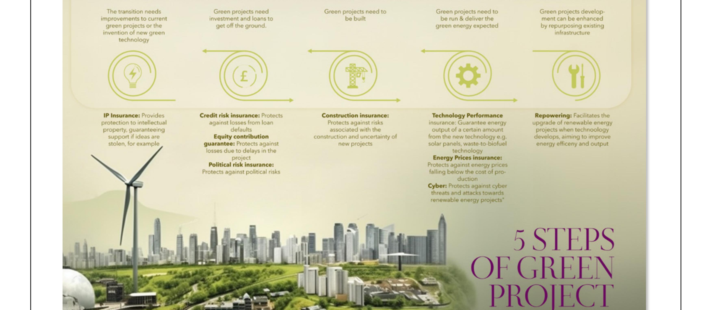
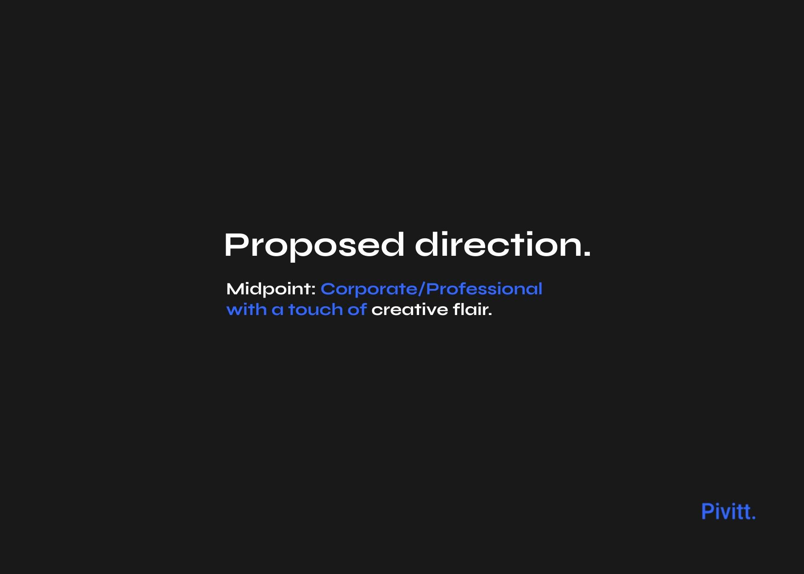
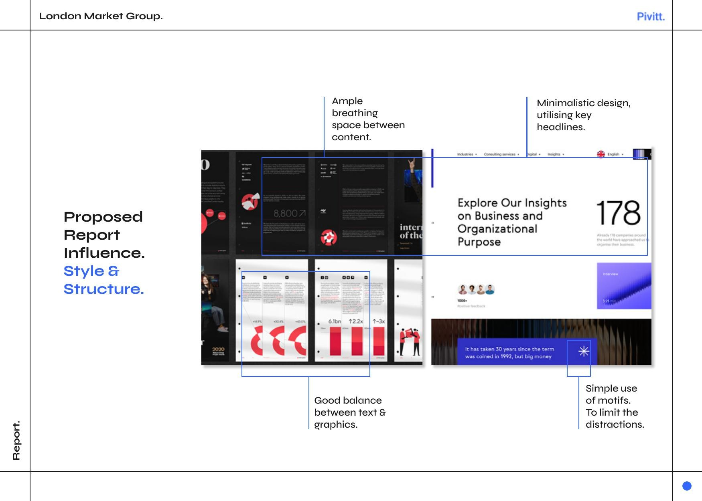
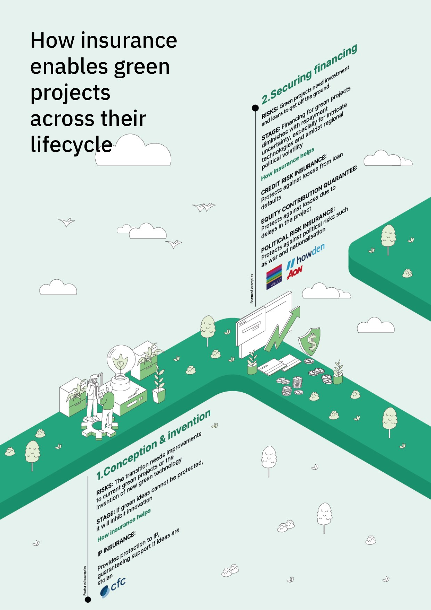
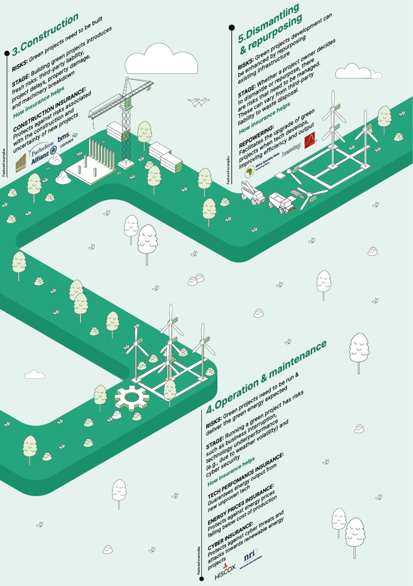
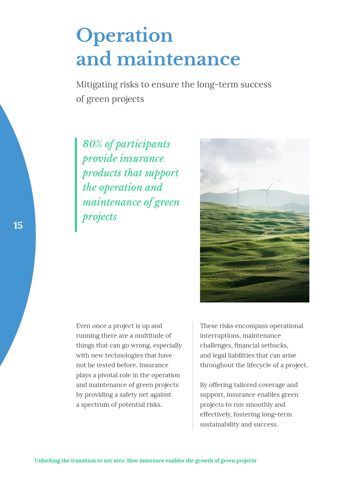
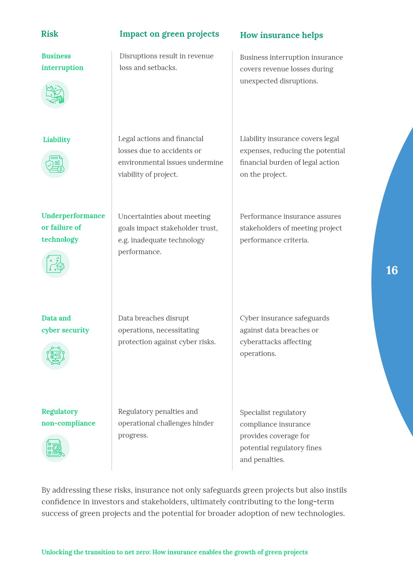
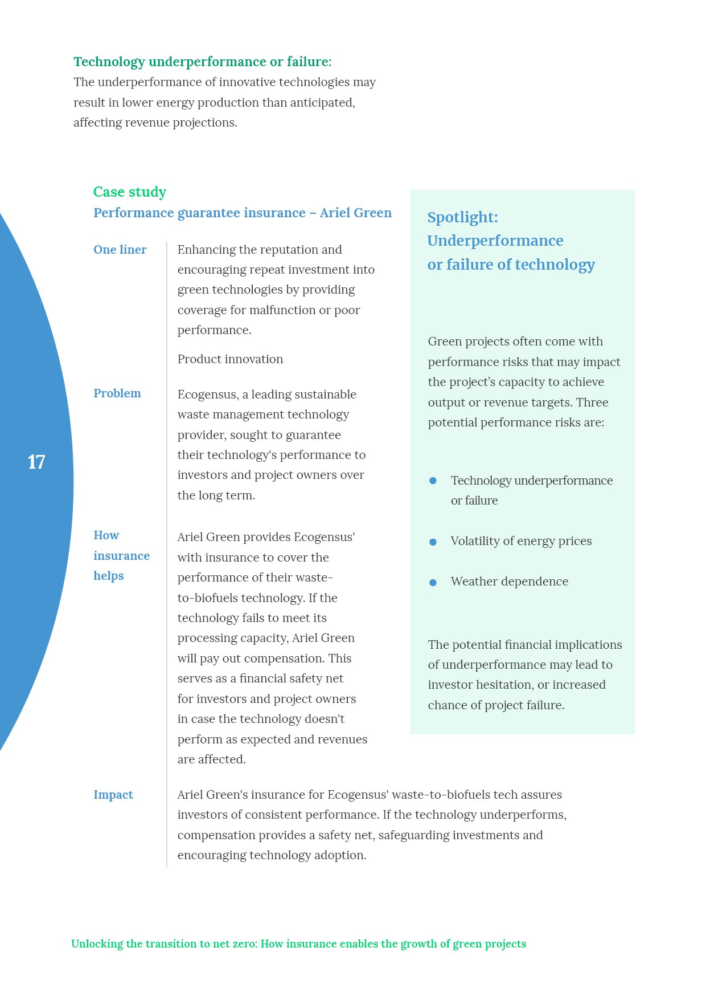
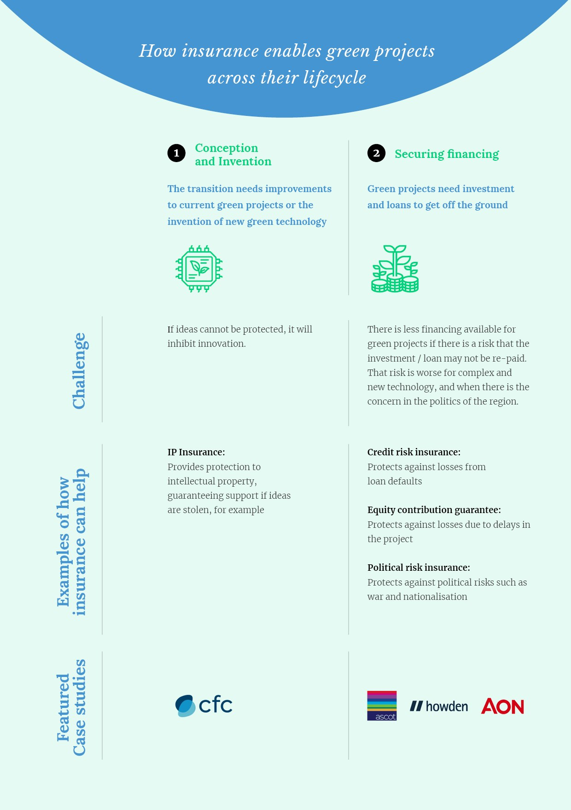
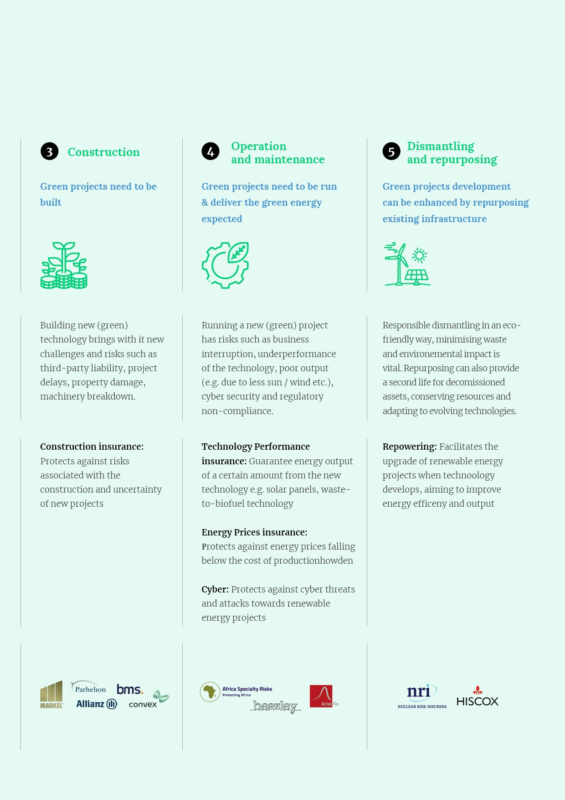

London Market Group
The OxBow Partners study on insurance and green infrastructure, designed and illustrated from the ground up.
The brief
Make a technical subject land.
An insurance report on green infrastructure is, on paper, a hard read: risk tables, case studies, parametric cover and a long list of insurer partners. The job was to make sixteen pages of that material clear and confident, with a visual language as forward-looking as the subject.
The approach
Direction first, then detail.
We set the direction before a single page was laid out: a structure for the report, a colour system and a reference for the illustration style. That groundwork is what kept three rounds of design moving the same way rather than starting over each time.


The illustration
An isometric world for green projects.
The centrepiece was a custom isometric illustration system: green projects shown across their full lifecycle, from construction to operation to repurposing, so a reader could see the idea before reading a word of it.


The report
Sixteen pages, one voice.
The system carried across the whole report: risk and impact tables, case-study spreads, the parametric cover explainer and the insurer line-up, all held together by the same grid, colour and illustration language.





The outcome
A report people actually open.
The London Market Group went to market with a report that looks the part: a technical subject made legible, and a custom illustration system it can carry into the next study and the one after.
Where does your brand sit against the business?
Every engagement starts with the Brand Alignment Diagnostic, a fixed first step that scores your brand against the business and shows what to fix first.